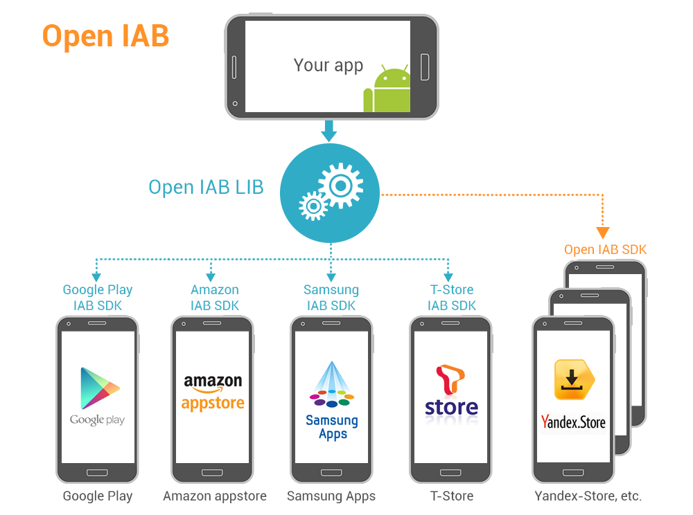

Uploading Android apps to all the existing Android appstores is a painful process and AppDF project was designed to make it easier. But what is even more difficult for the developers is supporting different in-purchase SDKs of different appstores. There are several different In-App Purchase SDKs already and this number is increasing. We are going to create an open source library that will wrap appstore in-app purchase APIs of all the stores and provide an easy way for the developers to develop their apps/games in a way that one APK will work in all the stores and automatically use right in-app purchase API under each store. Plus we are going to develop an open in-app billing API that stores could implement to support all the built APK files using this library.

We have just started. We are creating a sample game that supports in-app billing of all existing appstores that support in-app purchasing. In the same time, we are designing Open In-App Billing API that appstores can use to easily integrate in-app billing functionality.
OpenIAB is an open source library that wraps the already existing IAB SDKs as well as an open API that appstores could implement. It is important to understand that all payments are processes directly by each store and there is no a middle man staying between the app developers and the appstores. OpenIAB will not do payments for the appstores. It is just an API how the apps communicate with appstores to request in-app billing. There is a common open API/SDK all the stores can use instead of each new store implement their own API/SDK and developers have to integrate all these different SDKs in their apps.
The following Android application stores support in-app billing today:
We are working on integrating their IAB SDKs in one OpenIAB library.
Source code of the OpenIAB library and the samples is available under the terms of the Apache License, Version 2.0:
http://www.apache.org/licenses/LICENSE-2.0
The OpenIAB API specification and the related texts are available under the terms of the Creative Commons Attribution 2.5 license:
http://creativecommons.org/licenses/by/2.5/